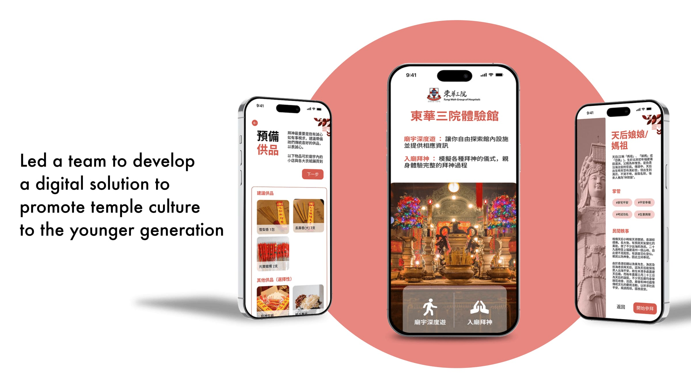
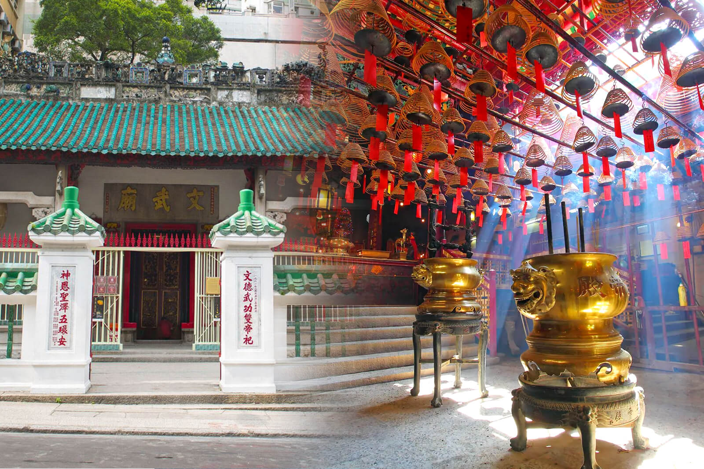

Temple culture, for a new generation.
Tung Wah Group of Hospitals — Hong Kong's oldest charity — watched younger generations drift away from temple worship. We designed a digital experience hall that lowers the barrier to a centuries-old culture.
Explore the screen-flow libraryThe problem
Young people weren't rejecting temple culture — they simply had no way in. Research surfaced three barriers:
- Knowledge gap — people avoided temples because they didn't understand worshipping practices
- No trusted guidance — credible professionals were hard to find
- Time cost — tradition spreads through mentorship, not accessible digital resources
The process
Research
- ~40 interviews across TWGH stakeholders, believers, atheists, young people and Gen X
- Guerrilla interviews, online surveys, remote sessions and on-site temple visits
- Literature review on cultural heritage, identity and preservation
Synthesis
- Pain points crystallised through the persona "Sean Chan", an entrepreneur archetype
Ideation
- Crazy 8 sessions produced three concepts: spirits-greeting delivery, digital workshop, worshipping wiki
- Client chose the digital workshop — realistic for resources and the planned temple expansion
The solution
A web-based Digital Experience Hall with two complementary modes:
- Exploration mode — scan QR codes on temple items (censers, altars) for contextual stories, with curated pathways for first-time visitors
- Journey mode — step-by-step guided ceremonies organised by deity (academics, career, health, wealth), with preparation phases, offering checklists and prayer guidance
Web-based for lower cost and faster delivery; bilingual Chinese–English; audio assistance for hearing-impaired users; TWGH brand colours with authentic temple photography.
Turning ritual into an approachable journey.
The interface gives first-time visitors a way into temple culture without stripping away its atmosphere or meaning.


The outcomes
10 usability sessions across diverse user groups, measured on task accuracy and confusion-free flow:
- Visual cohesion between backgrounds and photography needed tightening
- Missing navigation staples — hamburger menu, pagination, search — were added to the backlog
- Advanced users wanted deeper content on offerings and symbolism
What I learned
- Balance ideation creativity with a realistic read on resources and effort
- Foundational UX details (navigation, search) earn user trust before any delight can
- Diverse perspectives during problem definition prevent designing for yourself